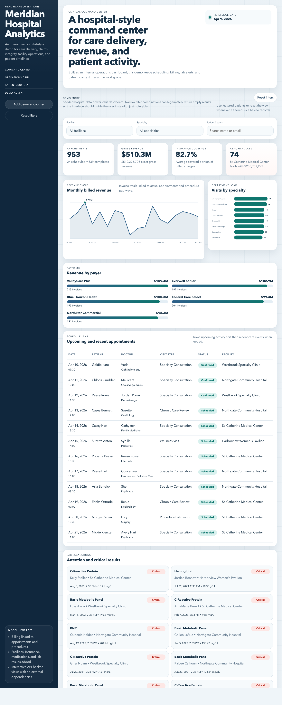
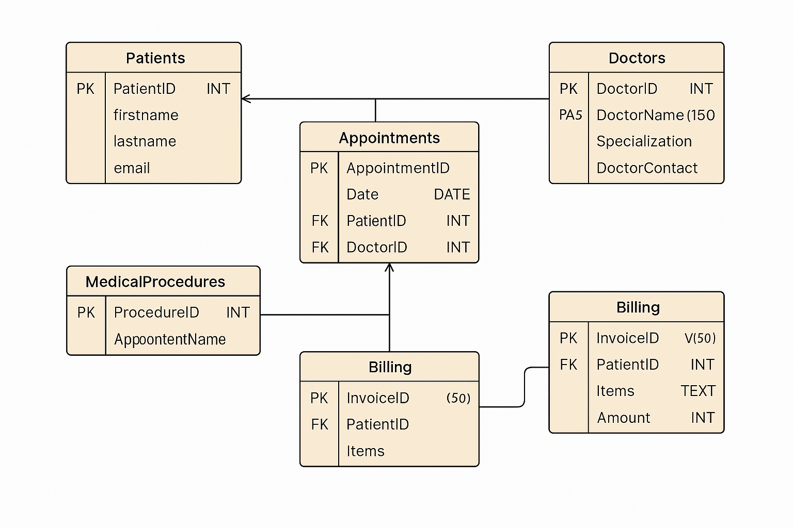

Seeded patients
--
Core patient records represented across the reporting exports.
Portfolio Case Study
Meridian Hospital Analytics reframes a personally built SQL project as a polished healthcare reporting surface, using exported query results to present patient volume, provider activity, procedures, and billing with a professional hospital-style interface.
Project focus
SQL, reporting, and product storytellingSeeded patients
Core patient records represented across the reporting exports.
Appointments
Encounter volume used to frame operational workload and care activity.
Billed volume
Revenue context surfaced through reporting outputs and static visual summaries.
Project angle
A portfolio-ready presentation of healthcare operations, revenue, and provider activity.
Experience Preview
The broader project extends this visual language into a fuller application-style dashboard with live filters, patient journeys, and richer operational views.

Portfolio framing
Healthcare operations analytics: schema design, reporting logic, and a clean reporting surface.What this project demonstrates
Operations Trend
A static SVG chart rendered from exported SQL results.
Provider Highlight
Procedure Highlight
Peak Activity
Top Doctors
Revenue Story
One more static reporting surface that still feels product-oriented.
Procedure Volume
Data Model
The project evolved from a simple patient-doctor-appointment dataset into a broader healthcare operations model that supports provider activity, procedure analysis, and billing visibility.

Project Outcomes
Data modeling
Patients, providers, procedures, appointments, and billingThe schema provides enough structure to support operational reporting and a believable hospital analytics story.
Reporting logic
Operational workload, provider activity, procedures, and billingExported query results become charts, rankings, and summary panels that feel closer to a product than a raw query notebook.
Product direction
Designed to scale into a richer interactive dashboardThe full project direction includes live filters, patient journey views, and admin-seeded demo data while preserving the same Meridian visual system.
Best next improvements
Repository
Project guide
Built with
SQL schema and queries, SQLite-based demo data exports, vanilla HTML/CSS/JS, and a hospital-style presentation layer.